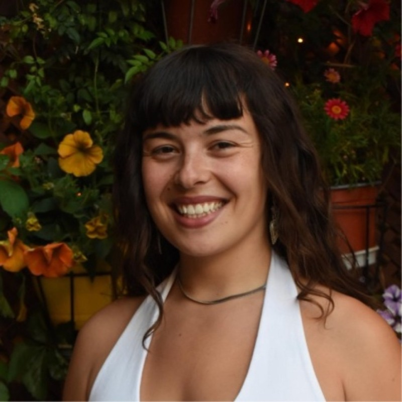

Stella M. Sigala
MSc student in Applied Meteorology and Environmental Physics,
University of Patras
stellasigalazanet at gmail dot com

Hi! I’m Stella, a physicist working at the intersection of applied meteorology, atmospheric physics, numerical weather prediction, and machine learning for weather and climate.
I am currently completing my master’s degree in Applied Meteorology and Environmental Physics at the University of Patras. My work focuses on high-resolution coastal and marine forecasting, limited-area modelling, forecast verification, and the role of observations in physical and AI-based weather prediction systems.
I am especially interested in how traditional numerical weather prediction knowledge can support the next generation of machine-learning weather models without losing the physical intuition that atmospheric science is built on.
Projects
-
High-resolution weather forecasting for the 38th America’s
Cup in Naples Bay
Limited-area modelling, sea-breeze regimes, observations, and forecast uncertainty.
-
Numerical methods for weather prediction
Dynamical cores, discretization, grids, high-performance computing, and machine-learning contrasts.
-
Observation impact in physical and AI weather prediction
systems
FSOI, data-denial experiments, direct observation prediction, and hybrid forecasting.
-
Blocking, jet waviness, and the January 2017 cold spell
ERA5-based diagnostics using blocking indices and cold-spell thresholds.
-
Radiative transfer experiments with libRadtran
Aerosol optical depth, single-scattering albedo, asymmetry factor, and spectral irradiance.
-
Atmospheric Physics laboratory teaching
Teaching-assistant work in meteorology, atmospheric dynamics, boundary-layer physics, and climate analysis.